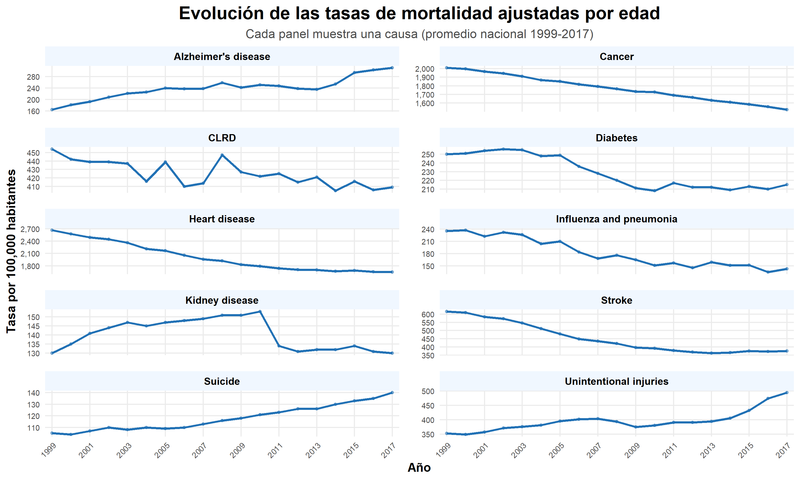
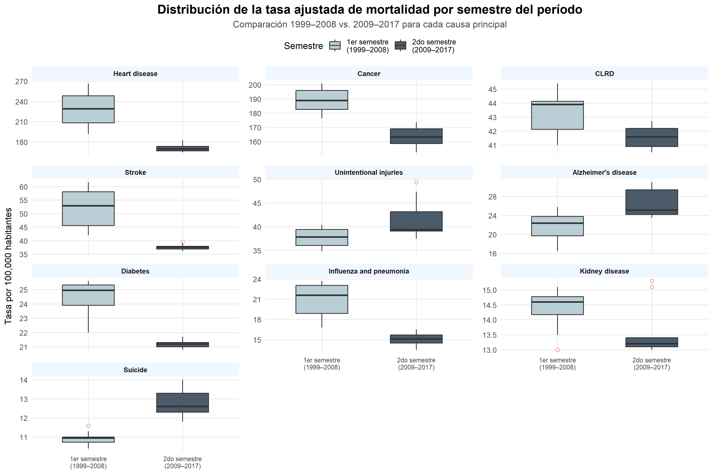
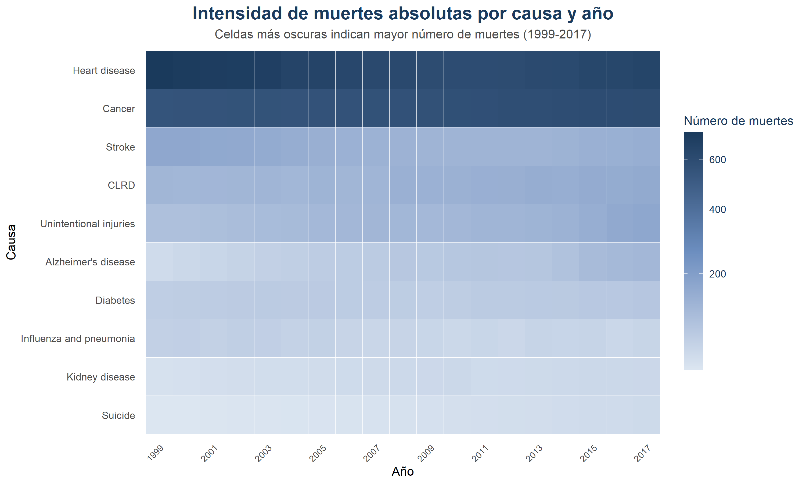
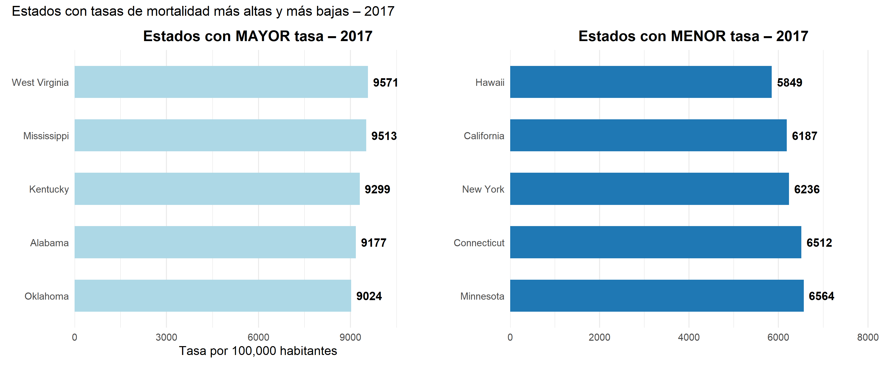

8 Series de tiempo por causa
8.1 Causa vs Año
library(scales)
tasas_nacional <- datos %>%
filter(causa != "All causes") %>%
group_by(anio, causa) %>%
summarise(tasa_promedio = mean(tasa_ajustada, na.rm = TRUE), .groups = "drop")
ggplot(tasas_nacional, aes(x = anio, y = tasa_promedio)) +
geom_line(color = "#2171B5", size = 0.9) +
geom_point(color = "#2171B5", size = 1, alpha = 0.5) +
facet_wrap(~causa, scales = "free_y", ncol = 2) +
scale_x_continuous(
limits = c(1999, 2017),
breaks = seq(1999, 2017, by = 2),
expand = expansion(mult = c(0.02, 0.02))
) +
scale_y_continuous(labels = comma) +
labs(
title = "Evolución de las tasas de mortalidad ajustadas por edad",
subtitle = "Cada panel muestra una causa (promedio nacional 1999-2017)",
x = "Año",
y = "Tasa por 100,000 habitantes"
) +
theme_minimal(base_size = 11) +
theme(
strip.text = element_text(face = "bold", size = 9, color = "black"),
strip.background = element_rect(fill = "#F0F7FF", color = NA),
plot.title = element_text(face = "bold", size = 16, hjust = 0.5),
plot.subtitle = element_text(size = 11, hjust = 0.5, color = "gray30"),
plot.caption = element_text(size = 9, color = "gray50", hjust = 1),
axis.title = element_text(face = "bold"),
axis.text.x = element_text(angle = 45, hjust = 1, size = 7),
axis.text.y = element_text(size = 7),
panel.grid.minor = element_blank(),
panel.spacing = unit(1, "lines")
)
Interpretación: La gráfica de la evolución de las tasas de mortalidad ajustadas por edad muestra cómo han cambiado las principales causas de muerte entre 1999 y 2017. Se observa un patrón claro: las enfermedades cardíacas y el cáncer presentan las tasas más altas pero con una tendencia descendente, lo que refleja avances en prevención y tratamiento; en contraste, el Alzheimer y las lesiones no intencionales muestran un aumento sostenido, vinculado al envejecimiento poblacional y a factores sociales. Otras causas como diabetes, enfermedad renal, influenza/neumonía y CLRD se mantienen relativamente estables o con ligeras variaciones. Es relevante porque evidencia una transición epidemiológica: mientras algunas enfermedades crónicas tradicionales disminuyen, emergen con fuerza nuevas amenazas asociadas a la longevidad y a riesgos externos, lo que plantea retos estratégicos para la salud pública y la planificación de políticas sanitarias.
library(tidyverse)
library(scales)
tasas_semestre <- datos %>%
filter(causa != "All causes") %>%
mutate(
semestre_periodo = case_when(
anio >= 1999 & anio <= 2008 ~ "1er semestre\n(1999–2008)",
anio >= 2009 & anio <= 2017 ~ "2do semestre\n(2009–2017)"
)
) %>%
filter(!is.na(semestre_periodo))
# mediana por semestre y causa para el facet
orden_causas_box <- tasas_semestre %>%
group_by(causa) %>%
summarise(mediana_global = median(tasa_ajustada, na.rm = TRUE)) %>%
arrange(desc(mediana_global)) %>%
pull(causa)
tasas_semestre$causa <- factor(tasas_semestre$causa, levels = orden_causas_box)
ggplot(tasas_semestre, aes(x = semestre_periodo,
y = tasa_ajustada,
fill = semestre_periodo)) +
geom_boxplot(
width = 0.55,
outlier.shape = 21,
outlier.size = 1.8,
outlier.fill = "white",
outlier.color = "#E74C3C",
alpha = 0.85
) +
facet_wrap(~causa, scales = "free_y", ncol = 3) +
scale_fill_manual(values = c(
"1er semestre\n(1999–2008)" = "#AEC6CF",
"2do semestre\n(2009–2017)" = "#2C3E50"
)) +
scale_y_continuous(labels = comma) +
labs(
title = "Distribución de la tasa ajustada de mortalidad por semestre del período",
subtitle = "Comparación 1999–2008 vs. 2009–2017 para cada causa principal",
x = NULL,
y = "Tasa por 100,000 habitantes",
fill = "Semestre"
) +
theme_minimal(base_size = 11) +
theme(
strip.text = element_text(face = "bold", size = 8.5),
strip.background = element_rect(fill = "#F0F7FF", color = NA),
plot.title = element_text(face = "bold", size = 15, hjust = 0.5),
plot.subtitle = element_text(size = 11, hjust = 0.5, color = "gray30"),
plot.caption = element_text(size = 9, color = "gray50", hjust = 1),
legend.position = "top",
axis.text.x = element_text(size = 8),
panel.spacing = unit(0.8, "lines"),
panel.grid.minor = element_blank()
)
Los boxplots muestran dos tendencias opuestas: Heart disease, Cancer, Stroke y Diabetes reducen sus tasas entre el primer semestre 1999–2008 y el segundo 2009–2017, reflejando mejoras en prevención y tratamiento. En cambio, Unintentional injuries, Alzheimer’s y Suicide aumentan, vinculadas al envejecimiento poblacional y la crisis de opioides.
8.2 Heatmap de muertes absolutas por causas y años
causas_todas <- datos_nacional %>%
filter(causa != "All causes") %>%
distinct(causa) %>%
pull(causa)
# Filtrar datos para el heatmap
datos_heatmap <- datos_nacional %>%
filter(causa %in% causas_todas) %>%
select(anio, causa, muertes)
# Verificar el rango de años y muertes
print(paste("Años en el heatmap:", min(datos_heatmap$anio), "-", max(datos_heatmap$anio)))## [1] "Años en el heatmap: 1999 - 2017"## [1] "Rango de muertes: 29.199 - 725.192"ggplot(datos_heatmap, aes(x = anio,
y = reorder(causa, muertes, sum),
fill = muertes)) +
geom_tile(color = "white", linewidth = 0.1) +
scale_fill_gradientn(
colours = c("#DCE6F1", "#6C8EBF", "#1A3A5C"),
trans = "sqrt",
name = "Número de muertes",
labels = comma
) +
scale_x_continuous(
breaks = seq(1999, 2017, by = 2),
expand = expansion(mult = c(0.01, 0.01))
) +
labs(
title = "Intensidad de muertes absolutas por causa y año",
subtitle = "Celdas más oscuras indican mayor número de muertes (1999-2017)",
x = "Año",
y = "Causa"
) +
theme_minimal(base_size = 11) +
theme(
plot.title = element_text(face = "bold", size = 16, hjust = 0.5, color = "#1A3A5C"),
plot.subtitle = element_text(size = 11, hjust = 0.5, color = "gray30"),
axis.text.x = element_text(angle = 45, hjust = 1, size = 8),
axis.text.y = element_text(size = 9),
legend.title = element_text(color = "#1A3A5C"),
legend.text = element_text(color = "#1A3A5C"),
legend.position = "right",
legend.key.height = unit(1.5, "cm"),
panel.grid = element_blank()
)
Interpretación: Se observa que enfermedades cardíacas y cáncer son las causas con mayor intensidad (celdas más oscuras, superando las 600 mil muertes anuales), manteniéndose como líderes en todo el período. En contraste, causas como suicidio, enfermedad renal y influenza/neumonía aparecen con tonos más claros, reflejando menor volumen absoluto de muertes. El Alzheimer y las lesiones no intencionales muestran un aumento progresivo en la intensidad, lo que coincide con el envejecimiento poblacional y cambios sociales. Este patrón es relevante porque permite identificar no solo las causas dominantes, sino también aquellas que están creciendo en importancia relativa, aportando evidencia para orientar políticas de salud pública hacia la prevención de enfermedades crónicas y la reducción de muertes evitables.
8.3 Análisis Geográfico: Disparidades por Estado
Las tasas de mortalidad no se distribuyen de manera homogénea en el
territorio estadounidense. Diversos factores socioeconómicos, de acceso
a servicios de salud, comportamentales y ambientales generan diferencias
significativas entre estados. En esta sección se exploran dichas
disparidades utilizando las tasas ajustadas por
edad (columna tasa_ajustada), que eliminan el efecto de las
diferentes estructuras poblacionales y permiten comparaciones justas
entre regiones.
8.4 Mapeo - Número de muertes de 1999 a 2017 por estados
library(dplyr)
library(readr)
library(stringr)
library(janitor)
library(plotly)
datos_limpios <- read_csv("NCHS_Leading_Causes.csv") %>%
clean_names() %>%
mutate(
year = as.numeric(year),
state = str_trim(state),
deaths = as.numeric(deaths)
) %>%
filter(
cause_name == "All causes",
state != "United States",
year >= 1999, year <= 2017,
!is.na(deaths)
)
state_abbrev <- tibble::tibble(
state = c("Alabama","Alaska","Arizona","Arkansas","California","Colorado",
"Connecticut","Delaware","Florida","Georgia","Hawaii","Idaho",
"Illinois","Indiana","Iowa","Kansas","Kentucky","Louisiana",
"Maine","Maryland","Massachusetts","Michigan","Minnesota",
"Mississippi","Missouri","Montana","Nebraska","Nevada",
"New Hampshire","New Jersey","New Mexico","New York",
"North Carolina","North Dakota","Ohio","Oklahoma","Oregon",
"Pennsylvania","Rhode Island","South Carolina","South Dakota",
"Tennessee","Texas","Utah","Vermont","Virginia","Washington",
"West Virginia","Wisconsin","Wyoming","District of Columbia"),
code = c("AL","AK","AZ","AR","CA","CO","CT","DE","FL","GA","HI","ID",
"IL","IN","IA","KS","KY","LA","ME","MD","MA","MI","MN","MS",
"MO","MT","NE","NV","NH","NJ","NM","NY","NC","ND","OH","OK",
"OR","PA","RI","SC","SD","TN","TX","UT","VT","VA","WA","WV",
"WI","WY","DC")
)
datos_plot1 <- datos_limpios %>%
left_join(state_abbrev, by = "state") %>%
filter(!is.na(code)) %>%
mutate(
label = paste0(state, "<br>Muertes: ", format(deaths, big.mark = ",")),
year = as.character(year)
)
plot_geo(datos_plot1, locationmode = "USA-states", frame = ~year) %>%
add_trace(
z = ~deaths,
locations = ~code,
text = ~label,
hoverinfo = "text",
colorscale = list(
list(0, "#f7fbff"),
list(0.14, "#deebf7"),
list(0.28, "#c6dbef"),
list(0.43, "#9ecae1"),
list(0.57, "#6baed6"),
list(0.71, "#2171b5"),
list(1, "#08306b")
),
zmin = min(datos_limpios$deaths, na.rm = TRUE),
zmax = max(datos_limpios$deaths, na.rm = TRUE),
colorbar = list(
title = "N\u00famero de<br>muertes",
titlefont = list(color = "#1A3A5C"),
tickfont = list(color = "#1A3A5C")
),
marker = list(line = list(color = "#444444", width = 0.8))
) %>%
layout(
geo = list(
scope = "usa",
showlakes = FALSE,
lakecolor = "white",
bgcolor = "rgba(0,0,0,0)"
),
paper_bgcolor = "rgba(0,0,0,0)",
font = list(family = "Segoe UI, Arial, sans-serif", color = "#1A3A5C"),
title = list(
text = "N\u00famero de muertes por estado \u2014 EE.UU. (1999\u20132017)",
font = list(color = "#1A3A5C", size = 13)
)
) %>%
animation_opts(
frame = 800,
transition = 400,
easing = "linear",
redraw = FALSE
) %>%
animation_slider(
currentvalue = list(prefix = "A\u00f1o: ", font = list(color = "#1A3A5C"))
) %>%
animation_button(
x = 0, xanchor = "left",
y = -0.08, yanchor = "bottom",
label = "\u25b6 Reproducir"
)Este mapa interactivo muestra la evolución anual del número total de muertes (en miles) para cada estado de EE.UU. entre 1999 y 2017. Al deslizar el control superior, se puede observar cómo la cargas de mortalidad se ha desplazado geográficamente a lo largo del tiempo. Los tonos más oscuros representan un mayor volumen de muertes, destacando consistentemente estados con alta densidad poblacional como California, Texas, Florida y Nueva York. La herramienta emergente (popup) proporciona el valor exacto en miles al hacer clic sobre cada estado, permitiendo comparaciones precisas entre años y regiones.
8.5 Mapeo – Tasa de mortalidad ajustada por edad de 1999 a 2017 por estados
library(dplyr)
library(readr)
library(stringr)
library(janitor)
library(plotly)
datos_limpios2 <- read_csv("NCHS_Leading_Causes.csv") %>%
clean_names() %>%
mutate(
year = as.numeric(year),
state = str_trim(state),
age_adjusted_death_rate = as.numeric(age_adjusted_death_rate)
) %>%
filter(
cause_name == "All causes",
state != "United States",
year >= 1999, year <= 2017,
!is.na(age_adjusted_death_rate)
)
state_abbrev <- tibble::tibble(
state = c("Alabama","Alaska","Arizona","Arkansas","California","Colorado",
"Connecticut","Delaware","Florida","Georgia","Hawaii","Idaho",
"Illinois","Indiana","Iowa","Kansas","Kentucky","Louisiana",
"Maine","Maryland","Massachusetts","Michigan","Minnesota",
"Mississippi","Missouri","Montana","Nebraska","Nevada",
"New Hampshire","New Jersey","New Mexico","New York",
"North Carolina","North Dakota","Ohio","Oklahoma","Oregon",
"Pennsylvania","Rhode Island","South Carolina","South Dakota",
"Tennessee","Texas","Utah","Vermont","Virginia","Washington",
"West Virginia","Wisconsin","Wyoming","District of Columbia"),
code = c("AL","AK","AZ","AR","CA","CO","CT","DE","FL","GA","HI","ID",
"IL","IN","IA","KS","KY","LA","ME","MD","MA","MI","MN","MS",
"MO","MT","NE","NV","NH","NJ","NM","NY","NC","ND","OH","OK",
"OR","PA","RI","SC","SD","TN","TX","UT","VT","VA","WA","WV",
"WI","WY","DC")
)
datos_plot2 <- datos_limpios2 %>%
left_join(state_abbrev, by = "state") %>%
filter(!is.na(code)) %>%
mutate(
tasa_label = paste0(state, "<br>Tasa ajustada: ",
round(age_adjusted_death_rate, 1), " por 100,000"),
year = as.character(year)
)
plot_geo(datos_plot2, locationmode = "USA-states", frame = ~year) %>%
add_trace(
z = ~age_adjusted_death_rate,
locations = ~code,
text = ~tasa_label,
hoverinfo = "text",
colorscale = list(
list(0, "#f7fbff"),
list(0.14, "#deebf7"),
list(0.28, "#c6dbef"),
list(0.43, "#9ecae1"),
list(0.57, "#6baed6"),
list(0.71, "#2171b5"),
list(1, "#08306b")
),
zmin = min(datos_limpios2$age_adjusted_death_rate, na.rm = TRUE),
zmax = max(datos_limpios2$age_adjusted_death_rate, na.rm = TRUE),
colorbar = list(
title = "Tasa ajustada<br>por 100,000",
titlefont = list(color = "#1A3A5C"),
tickfont = list(color = "#1A3A5C")
),
marker = list(line = list(color = "#444444", width = 0.8))
) %>%
layout(
geo = list(
scope = "usa",
showlakes = FALSE,
lakecolor = "white",
bgcolor = "rgba(0,0,0,0)"
),
paper_bgcolor = "rgba(0,0,0,0)",
font = list(family = "Segoe UI, Arial, sans-serif", color = "#1A3A5C"),
title = list(
text = "Tasa de mortalidad ajustada por edad \u2014 EE.UU. (1999\u20132017)",
font = list(color = "#1A3A5C", size = 13)
)
) %>%
animation_opts(
frame = 800,
transition = 400,
easing = "linear",
redraw = FALSE
) %>%
animation_slider(
currentvalue = list(prefix = "A\u00f1o: ", font = list(color = "#1A3A5C"))
) %>%
animation_button(
x = 0, xanchor = "left",
y = -0.08, yanchor = "bottom",
label = "\u25b6 Reproducir"
)8.6 Estados con mayor y menor mortalidad
library(dplyr)
library(kableExtra)
anio_seleccionado <- 2017
tasas_estado <- datos_limpios %>%
filter(cause_name == "All causes",
year == anio_seleccionado) %>%
group_by(state) %>%
summarise(
tasa = mean(age_adjusted_death_rate, na.rm = TRUE),
.groups = "drop"
) %>%
arrange(desc(tasa))
# Top 5 y Bottom 5
top5 <- tasas_estado %>% slice_head(n = 5)
bottom5 <- tasas_estado %>% slice_tail(n = 5)
tabla_top <- top5 %>%
mutate(`Tasa` = round(tasa, 1)) %>%
select(Estado = state, `Tasa por 100,000 hab.` = Tasa)
tabla_bottom <- bottom5 %>%
mutate(`Tasa` = round(tasa, 1)) %>%
select(Estado = state, `Tasa por 100,000 hab.` = Tasa)| Estado | Tasa por 100,000 hab. |
|---|---|
| West Virginia | 9571 |
| Mississippi | 9513 |
| Kentucky | 9299 |
| Alabama | 9177 |
| Oklahoma | 9024 |
| Estado | Tasa por 100,000 hab. |
|---|---|
| Minnesota | 6564 |
| Connecticut | 6512 |
| New York | 6236 |
| California | 6187 |
| Hawaii | 5849 |
library(ggplot2)
library(patchwork)
p_top <- ggplot(top5,
aes(x = reorder(state, tasa),
y = tasa)) +
geom_col(fill = "#ADD8E6", width = 0.6) +
geom_text(aes(label = round(tasa, 1)),
hjust = -0.2,
size = 4,
fontface = "bold") +
coord_flip() +
labs(
title = paste("Estados con MAYOR tasa –", anio_seleccionado),
x = NULL,
y = "Tasa por 100,000 habitantes"
) +
theme_minimal(base_size = 12) +
scale_y_continuous(expand = expansion(mult = c(0, 0.25))) +
theme(
panel.grid.major.y = element_blank(),
plot.title = element_text(face = "bold", hjust = 0.5)
)
p_bottom <- ggplot(bottom5,
aes(x = reorder(state, -tasa),
y = tasa)) +
geom_col(fill = "#1F78B4", width = 0.6) +
geom_text(aes(label = round(tasa, 1)),
hjust = -0.2,
size = 4,
fontface = "bold") +
coord_flip() +
labs(
title = paste("Estados con MENOR tasa –", anio_seleccionado),
x = NULL,
y = NULL
) +
theme_minimal(base_size = 12) +
scale_y_continuous(expand = expansion(mult = c(0, 0.25))) +
theme(
panel.grid.major.y = element_blank(),
plot.title = element_text(face = "bold", hjust = 0.5)
)
p_top + p_bottom +
plot_annotation(
title = paste("Estados con tasas de mortalidad más altas y más bajas –", anio_seleccionado)
)
Interpretación: La comparación de tasas de mortalidad en los estados de EE. UU. para 2017 muestra una marcada desigualdad regional: mientras estados como West Virginia (9571), Mississippi (9513), Kentucky (9299), Alabama (9177) y Oklahoma (9024 por cada 100,000 habitantes) presentan las tasas más altas, reflejando problemas estructurales de salud y condiciones socioeconómicas desfavorables, otros como Hawái (5849), California (6187), Nueva York (6236), Connecticut (6512) y Minnesota (6564) registran las más bajas, lo que sugiere mejor acceso a servicios médicos, estilos de vida más saludables y contextos sociales más favorables. Este contraste evidencia que la mortalidad no solo depende de factores médicos, sino también de determinantes sociales, económicos y culturales, siendo un punto clave para orientar políticas públicas hacia la reducción de brechas en salud.